# VNCTF2022 逆向 wp
# babyMaze
py 逆向 && 迷宫问题求解
得到 pyc 文件之后直接用 pycdc 一把梭哈，发现梭不了
那就直接看 opcode
./pycdas xxxx.pyc |
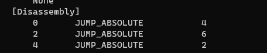
发现前面一个花指令，可能就是这段花指令让反编译工具无法正常使用
尝试 patch
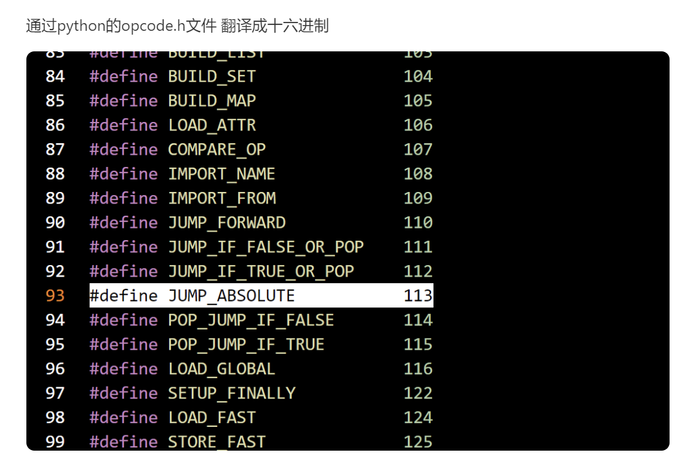
发现 JUMP_ABSOLUTE 指令对应的字节码是 0x71 用 010editor patch 连续三个 0x71
删除完之后也要修改 py 文件头中的总的字节数的值 -6
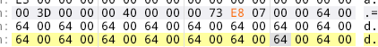
保存之后就可以直接用 pycdc 梭哈反汇编得到源码
_map=[...] | |
def maze(): | |
x = 1 | |
y = 1 | |
step = input() | |
for i in range(len(step)): | |
x -= 1 | |
if step[i] == 's': | |
x += 1 | |
elif step[i] == 'a': | |
y -= 1 | |
elif step[i] == 'd': | |
y += 1 | |
else: | |
return False | |
if None[x][y] == 1: | |
return False | |
if None == 29 and y == 29: | |
return True | |
def main(): | |
print('Welcome To VNCTF2022!!!') | |
print('Hello Mr. X, this time your mission is to get out of this maze this time.(FIND THAT 7!)') | |
print('you are still doing the mission alone, this tape will self-destruct in five seconds.') | |
if maze(): | |
print('Congratulation! flag: VNCTF{md5(your input)}') | |
else: | |
print("Sorry, we won't acknowledge the existence of your squad.") | |
return None | |
if __name__ == '__main__': | |
main() | |
return None |
发现是一个迷宫问题，直接写脚本破解
# 迷宫的数组表示 | |
map = [[1, 1, 1, 1, 1, 1, 1, 1, 1, 1, 1, 1, 1, 1, 1, 1, 1, 1, 1, 1, 1, 1, 1, 1, 1, 1, 1, 1, 1, 1, 1], [1, 0, 1, 0, 0, 0, 0, 0, 0, 0, 0, 0, 0, 0, 0, 0, 0, 0, 0, 0, 1, 0, 0, 0, 0, 0, 0, 0, 0, 0, 1], [1, 0, 1, 0, 1, 1, 1, 1, 1, 1, 1, 1, 1, 0, 1, 1, 1, 1, 1, 0, 1, 0, 1, 1, 1, 1, 1, 1, 1, 0, 1], [1, 0, 1, 0, 0, 0, 1, 0, 0, 0, 0, 0, 0, 0, 1, 0, 0, 0, 1, 0, 0, 0, 1, 0, 1, 0, 0, 0, 1, 0, 1], [1, 0, 1, 1, 1, 1, 1, 0, 1, 1, 1, 1, 1, 1, 1, 1, 1, 0, 1, 1, 1, 1, 1, 0, 1, 0, 1, 0, 1, 0, 1], [1, 0, 0, 0, 1, 0, 0, 0, 1, 0, 0, 0, 0, 0, 0, 0, 0, 0, 0, 0, 0, 0, 1, 0, 0, 0, 1, 0, 0, 0, 1], [1, 1, 1, 0, 1, 0, 1, 1, 1, 0, 1, 1, 1, 1, 1, 1, 1, 1, 1, 1, 1, 1, 1, 0, 1, 1, 1, 1, 1, 1, 1], [1, 0, 0, 0, 1, 0, 1, 0, 0, 0, 1, 0, 0, 0, 0, 0, 0, 0, 0, 0, 1, 0, 0, 0, 1, 0, 0, 0, 1, 0, 1], [1, 0, 1, 1, 1, 0, 1, 0, 1, 1, 1, 0, 1, 1, 1, 1, 1, 1, 1, 0, 1, 0, 1, 1, 1, 0, 1, 0, 1, 0, 1], [1, 0, 0, 0, 0, 0, 1, 0, 1, 0, 0, 0, 1, 0, 0, 0, 1, 0, 1, 0, 1, 0, 0, 0, 1, 0, 1, 0, 0, 0, 1], [1, 1, 1, 1, 1, 1, 1, 0, 1, 0, 1, 1, 1, 0, 1, 0, 1, 0, 1, 0, 1, 1, 1, 0, 1, 0, 1, 1, 1, 0, 1], [1, 0, 0, 0, 0, 0, 0, 0, 1, 0, 0, 0, 0, 0, 1, 0, 0, 0, 1, 0, 1, 0, 0, 0, 1, 0, 1, 0, 0, 0, 1], [1, 0, 1, 1, 1, 1, 1, 1, 1, 1, 1, 1, 1, 1, 1, 1, 1, 0, 1, 0, 1, 0, 1, 1, 1, 0, 1, 0, 1, 1, 1], [1, 0, 0, 0, 0, 0, 0, 0, 1, 0, 0, 0, 0, 0, 0, 0, 1, 0, 1, 0, 0, 0, 1, 0, 0, 0, 1, 0, 0, 0, 1], [1, 0, 1, 1, 1, 1, 1, 0, 1, 0, 1, 0, 1, 0, 1, 1, 1, 0, 1, 1, 1, 1, 1, 0, 1, 1, 1, 1, 1, 1, 1], [1, 0, 1, 0, 0, 0, 1, 0, 1, 0, 1, 0, 1, 0, 1, 0, 0, 0, 1, 0, 0, 0, 0, 0, 0, 0, 0, 0, 0, 0, 1], [1, 0, 1, 0, 1, 0, 1, 0, 1, 0, 1, 0, 1, 1, 1, 0, 1, 1, 1, 0, 1, 1, 1, 1, 1, 0, 1, 1, 1, 0, 1], [1, 0, 1, 0, 1, 0, 1, 0, 1, 0, 1, 0, 0, 0, 1, 0, 0, 0, 1, 0, 1, 0, 0, 0, 1, 0, 1, 0, 0, 0, 1], [1, 0, 1, 0, 1, 1, 1, 0, 1, 0, 1, 1, 1, 0, 1, 1, 1, 0, 1, 0, 1, 0, 1, 0, 1, 1, 1, 0, 1, 1, 1], [1, 0, 0, 0, 1, 0, 0, 0, 1, 0, 1, 0, 0, 0, 0, 0, 1, 0, 1, 0, 1, 0, 1, 0, 0, 0, 1, 0, 0, 0, 1], [1, 0, 1, 1, 1, 0, 1, 0, 1, 0, 1, 0, 1, 1, 1, 1, 1, 0, 1, 0, 1, 0, 1, 1, 1, 0, 1, 0, 1, 0, 1], [1, 0, 1, 0, 0, 0, 1, 0, 1, 0, 1, 0, 0, 0, 0, 0, 0, 0, 1, 0, 1, 0, 1, 0, 1, 0, 1, 0, 1, 0, 1], [1, 0, 1, 0, 1, 1, 1, 0, 1, 0, 1, 1, 1, 1, 1, 1, 1, 1, 1, 1, 1, 0, 1, 0, 1, 0, 1, 0, 1, 0, 1], [1, 0, 1, 0, 0, 0, 1, 0, 1, 0, 1, 0, 0, 0, 0, 0, 0, 0, 0, 0, 1, 0, 1, 0, 1, 0, 1, 0, 1, 0, 1], [1, 0, 1, 1, 1, 0, 1, 0, 1, 0, 1, 1, 1, 1, 1, 0, 1, 0, 1, 0, 1, 0, 1, 0, 1, 0, 1, 0, 1, 0, 1], [1, 0, 0, 0, 1, 0, 1, 0, 1, 0, 0, 0, 0, 0, 1, 0, 1, 0, 1, 0, 0, 0, 1, 0, 0, 0, 1, 0, 1, 0, 1], [1, 1, 1, 1, 1, 0, 1, 1, 1, 1, 1, 1, 1, 0, 1, 1, 1, 0, 1, 1, 1, 1, 1, 1, 1, 0, 1, 1, 1, 0, 1], [1, 0, 0, 0, 0, 0, 1, 0, 0, 0, 0, 0, 1, 0, 0, 0, 1, 0, 0, 0, 0, 0, 0, 0, 1, 0, 0, 0, 0, 0, 1], [1, 0, 1, 1, 1, 1, 1, 0, 1, 1, 1, 0, 1, 1, 1, 0, 1, 1, 1, 1, 1, 1, 1, 0, 1, 1, 1, 1, 1, 0, 1], [1, 0, 0, 0, 0, 0, 0, 0, 0, 0, 1, 0, 0, 0, 0, 0, 0, 0, 0, 0, 0, 0, 0, 0, 1, 0, 0, 0, 0, 0, 1], [1, 1, 1, 1, 1, 1, 1, 1, 1, 1, 1, 1, 1, 1, 1, 1, 1, 1, 1, 1, 1, 1, 1, 1, 1, 1, 1, 1, 1, 1, 1]] | |
#创造一个与迷宫数组大小相同的数组并且初始化所有元素为 0 | |
usedmap = [[0 for i in range(len(map))] for i in range(len(map))] | |
flag = '' | |
def DFS(x,y): | |
global flag | |
#定义迷宫结束的条件，这里是在 len (map)-1 出找到出口 | |
#那么结束条件就在 len (map)-2 处结束 | |
if x == len(map)-2 and y==len(map)-2: | |
print(flag) | |
return | |
#如果下一步不是墙 且没走过 | |
if map[x+1][y] == 0 and usedmap[x+1][y] == 0: | |
# 标记当前坐标走过（不是下一步） | |
usedmap [x][y] =1 | |
flag +='s' | |
DFS(x+1,y) # 尝试向下走 | |
flag = flag[:-1] # 回溯到这里说明这条路不可行，所以去掉最后输入的 S | |
usedmap [x][y] =0 #再设置当前坐标为 0 重新找路 | |
if map[x-1][y] == 0 and usedmap[x-1][y] == 0: | |
usedmap [x][y] =1 | |
flag +='w' | |
DFS(x-1,y) | |
flag = flag[:-1] | |
usedmap [x][y] =0 | |
if map[x][y+1] == 0 and usedmap[x][y+1] == 0: | |
usedmap [x][y] =1 | |
flag +='d' | |
DFS(x,y+1) | |
flag = flag[:-1] | |
usedmap [x][y] =0 | |
if map[x][y-1] == 0 and usedmap[x][y-1] == 0: | |
usedmap [x][y] =1 | |
flag +='a' | |
DFS(x,y-1) | |
flag = flag[:-1] | |
usedmap [x][y] =0 | |
print("path:") | |
x=1 | |
y=1 | |
DFS(x,y) |
flag
VNCTF{801f190737434100e7d2790bd5b0732e}
# cm 狗
go 逆向 & vm 逆向
VM 逆向技术入门教程
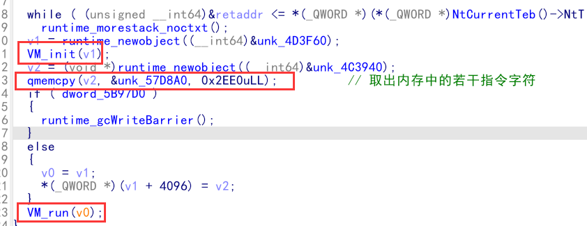
整个过程就是 VM 保护的常规流程，先初始化指令，然后读取特定指令字符，接着按照一定的规则解析字符
VM 逆向的关键点在于理清整个 VM 结构体，探明其中寄存器分配以及不同的指令码代表具体的什么指令，由于加入了 go 语言，使得过程有点艰难，但是 IDA PRO 7.6 版本之后支持 go 语言逆向，给 go 语言逆向很大帮助
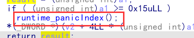 该函数表示程序执行中断
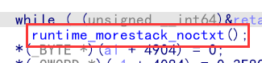
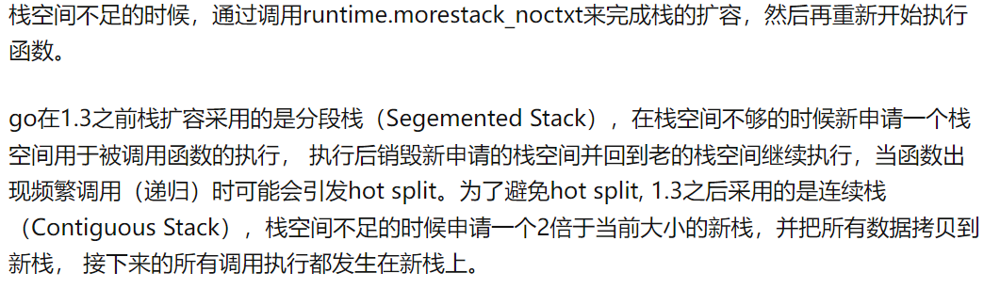
进入 init 函数后，发现有十几个 init_func, 这是 init_func 对应的就是后面解析指令时对应指令的作用
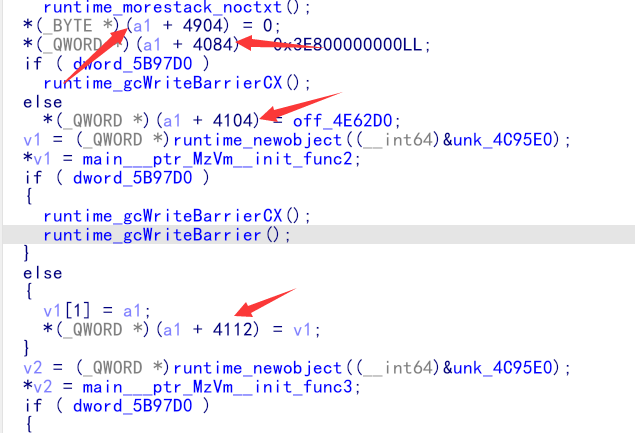
发现类似结构体的变量 a1 , 合理推测这正是虚拟机结构体，下面开始分析该结构体元素
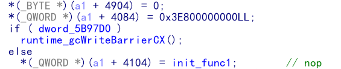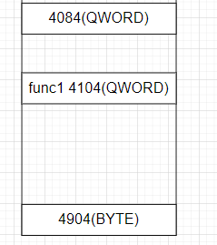 能够得到几个位置的值，但是暂时还不知道他们代表什么
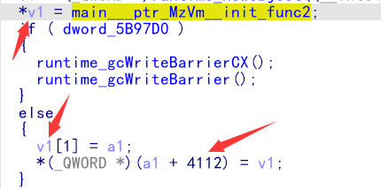
接着出现了另一个类似于结构体的变量 v1 ，v1 的第一块内存地址指向的是 init_func, 第二块指向的就是 a1 结构体
继续分析，进入 init_func2
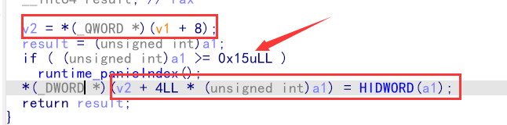
这里先是将 v1 结构体的一块内存地址传给 v2，接着对 a1 (参数) 做了判断，判断是否小于 21，判断通过后又做了类似于数组赋值的运算
所以，合理猜测 v2 指向的是寄存器数组，并且 a1 作为数组（寄存器）索引，不能大于 21，就说明一共只有 21 个寄存器
而这 21 个寄存器就在之前的 vm 结构体里面，具体位置如图
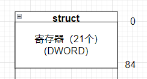
继续往下分析，发现后面毎有一个 init_func 函数初始化后，就会将其存入 结构体 a1 的一段内存中，而且是连续的，但是在中间有一段空白，所以推测是一个函数数组
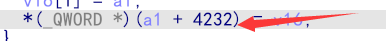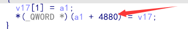
函数指针为 qword, 从 offse 4104 开始存入第一个 init_func 函数，到 offset 4904 存入最后一个函数，刚好 800 个字节，所以函数数组有 100 个元素 为 fun [100]
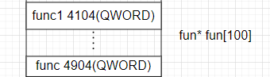
继续向下分析
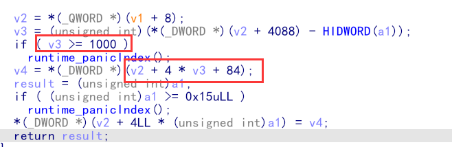
发现这里先是判断了 v3 的大小，然后又以 v3 为索引，似乎又是一个数组，而且元素长度 dword
我们发现之前构造 vm 结构体时中间刚好有 4000 字节的空白部分不知道作用，而这个数组刚好是 1000 的长度，单位元素长度 4 字节，所以算是一个大的数组当做内存
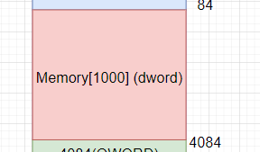
继续向下分析
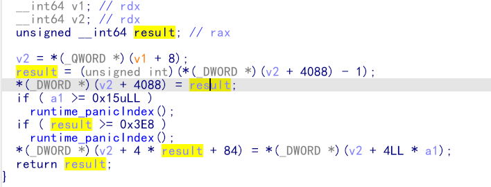
这段函数中出现了我们还没有分析出来的 offset 4088 的内容，分析整个函数，发现是将 result 作为索引，
而且索引在刚开始的时候是 -1 ，这个特点很像堆栈 push 的操作，所以后面的 offset 为 4088 开始的 4 个字节就是一个索引，index.
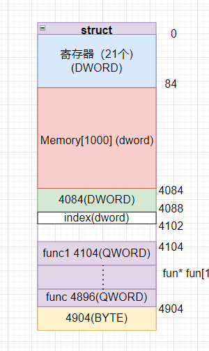
这就是我们分析之后的整个 vm 结构体，虽然中间有一部分未知，但是我们可以任意给予这块内存地址一个名称。
而之前还有另一个结构体 v1，也可以按照相同的方法构造
所以最终得到该题的 vm 逆向的结构体
struct func | |
{ | |
void *call; | |
vm *ptr; | |
}; | |
struct REG | |
{ | |
_DWORD R[21]; | |
}; | |
struct vm | |
{ | |
REG reg; | |
_DWORD Memory[1000]; | |
_DWORD rip; | |
_DWORD index; | |
void *data; | |
func *func[100]; | |
_QWORD isExit; | |
}; |
接着在 IDA PRO 中添加我们自己的结构体
shift +F1 右键 insert
注意，插入新的结构体的时候，有可能需要索引的结构体还没有定义，所以需要按照交叉引用顺序创建结构体
转换成我们自己的结构体之后，整个程序流程就会很清楚，然后判断每个 init_func 的作用。
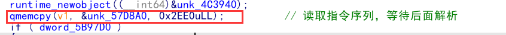
我们进入后面的 vm_run 函数
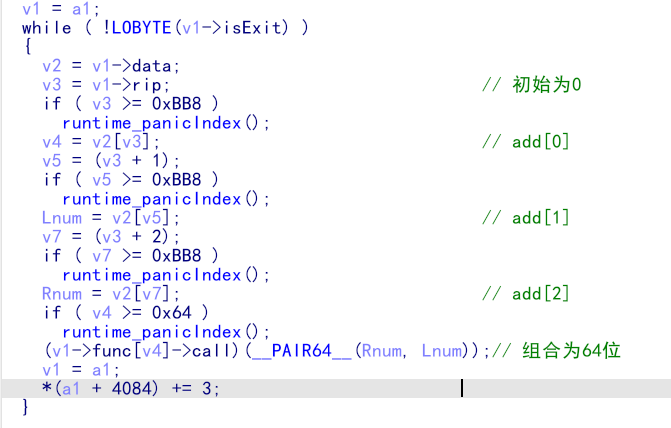
根据 VM_Run 可知指令长度是 3Byte，并且 0xFF4 偏移处是 eip，0x1000 偏移是 opcode，接下来是对 20 个 fun 的分析
知道了怎么解析指令之后，还得将指令 dump 出来
这里 dump 的时候遇到一个问题，直接使用 ida pro 自带的 shift +e 提取的时候会按照两个字节两个字节提取，但是看完 wp 之后发现好多数都不一样，所以直接写个脚本提取需要的数值
#from idaapi import * #在 ida pro 中使用 | |
start_addr=0x57D8a0 #需要提取的内存部分的起始位置 | |
list=[] | |
n = 114 # 元素个数 | |
for i in range(n): | |
t=Dword(start_addr) #Dword 为要提取的元素的长度 | |
list.append(hex(t)) | |
start_addr+=4 #与 Dword 对应 | |
print (list) | |
print (len(list)) | |
#得到的 list 里面有 ''，可以直接复制粘贴变成字符串然后清除所有的 '' |
dump 处操作码之后，根据指令解析编写脚本，得到真实的 opcode
op=[opcode...] | |
f=[] | |
for i in range(0,len(op),3): | |
if op[i]+1 not in f: | |
f.append(op[i]+1) | |
print(bytes.fromhex('61336366')) | |
for i in range(0,len(op),3): | |
adr=op[i]+1 | |
Lnum=op[i+1] | |
Rnum=op[i+2] | |
if adr==1: | |
print("%s: "%hex(i)+f"nop") | |
elif adr==2: | |
print("%s: "%hex(i)+f"mov r[{Lnum}],{hex(Rnum)}") | |
elif adr==3: | |
print("%s: "%hex(i)+f"mov r[{Lnum}],r[{Rnum}]") | |
elif adr==6: | |
print("%s: "%hex(i)+f"push r[{Lnum}]") | |
elif adr==7: | |
print("%s: "%hex(i)+f"pop r[{Lnum}]") | |
elif adr==8: | |
print("%s: "%hex(i)+f"add r[{Lnum}],r[{Rnum}]") | |
elif adr==9: | |
print("%s: "%hex(i)+f"sub r[{Lnum}],r[{Rnum}]") | |
elif adr==10: | |
print("%s: "%hex(i)+f"div r[{Lnum}],r[{Rnum}]") | |
elif adr==11: | |
print("%s: "%hex(i)+f"mul r[{Lnum}],r[{Rnum}]") | |
elif adr==12: | |
print("%s: "%hex(i)+f"xor r[{Lnum}],r[{Rnum}]") | |
elif adr==13: | |
print("%s: "%hex(i)+f"jmp r[{Lnum}]") | |
elif adr==15: | |
print("%s: "%hex(i)+f"cmp r[{Lnum}],r[{Rnum}] -- jnz r[19]") | |
elif adr==0x62: | |
print("%s: "%hex(i)+f"getchar(r[{Lnum}])") | |
elif adr==0x63: | |
print("%s: "%hex(i)+f'putchar(r[{Lnum})]') | |
elif adr==0x64: | |
print("%s: "%hex(i)+f"exit()") |
得到汇编指令，
打印字符串
4 个 byte 转为 int
TEA 加密
c
tea 没有魔改，直接写脚本破解
#include<iostream> | |
#define ut32 unsigned int | |
#define delta 0x9E3779B9 | |
void Tea_Decrypt(ut32* enc, ut32* k) { | |
ut32 sum = delta * 0x20; | |
ut32 v0 = enc[0]; | |
ut32 v1 = enc[1]; | |
for (int i = 0; i < 0x20; i++) { | |
v1 -= ((v0 << 4) + k[2]) ^ (v0 + sum) ^ ((v0 >> 5) + k[3]); | |
v0 -= ((v1 << 4) + k[0]) ^ (v1 + sum) ^ ((v1 >> 5) + k[1]); | |
sum -= delta; | |
} | |
enc[0] = v0; | |
enc[1] = v1; | |
} | |
int main() { | |
ut32 m[2] = { 0xe8d1d5df,0xf5e3c114 }; // 依次密文 | |
ut32 k[4] = { 0x95c4c,0x871d,0x1a7b7,0x12c7c7}; | |
Tea_Decrypt(m, k); | |
printf("%x %x", m[0], m[1]); | |
return 0; | |
} | |
// 常规 Tea 解密 | |
//VNCTF{ecd63ae5-8945-4ac4-b5a5-34fc3ade81e7} |